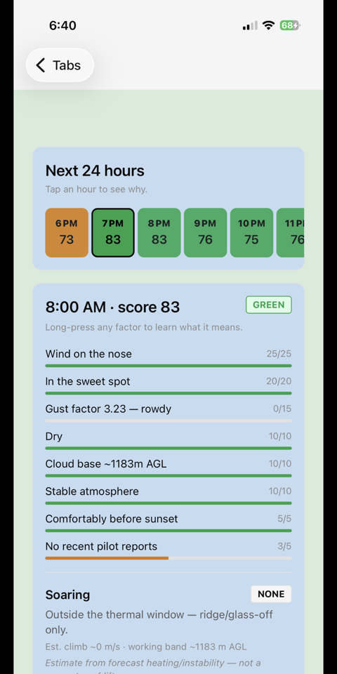
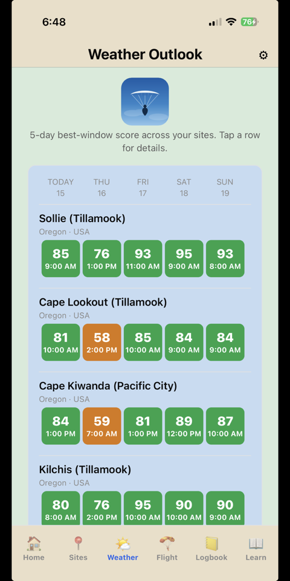

Paragliding weather, go/no-go site scores, vario, XC & IGC log — offline-first.
Skybase is a paragliding companion app for iPhone and Android that answers the two questions every free-flight pilot has: “should I fly today?” and “how is my flight going right now?” — and then keeps the proof in a standards-compliant logbook. It is built, operated, and flown weekly by its developer.
Multi-model weather, wind aloft, thermal forecasts, and honest per-site go/no-go scores tuned to your skill tier — all cached for offline use at the hill.
A full instrument: audio vario, moving map with airspace, glide range to landing zones, XC waypoints, and a flight recorder that keeps logging with the screen off.
IGC flight logs (the sport's standard format), a barogram replay with 3D follow camera, post-flight debriefs, and personal thermal maps built from your own tracks.
Glide-to-safety tools are free forever. An optional overdue watch can text one designated emergency contact if you don't check in after a flight — see the SMS program.


Skybase 0.1.0 is in the final stretch of store review: submitted to the Apple App Store (July 2026) and in closed testing on Google Play. Want early access? Email kajoadv@gmail.com for a beta invite (TestFlight on iOS, Play closed test on Android).
Skybase's one use of SMS is a low-volume, opt-in safety alert: if a pilot enables the overdue watch and fails to check in after a flight, their single designated emergency contact receives an automated text with the pilot's last known position. No marketing, ever; STOP always honored. The complete consent workflow, with in-app screenshots and message samples, is documented at SMS Program & Opt-In Flow.
Skybase is operated by Karel Plevac,
sole proprietor (Oregon, USA), whose adventure brand is
GetLostAdv — this site lives on the GetLostAdv domain
(skybase.getlostadv.com). It is a one-person operation: the
developer is a paraglider pilot and the app's first daily user. Support
and all inquiries: kajoadv@gmail.com.